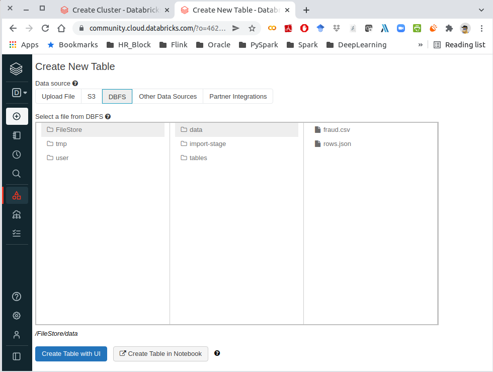
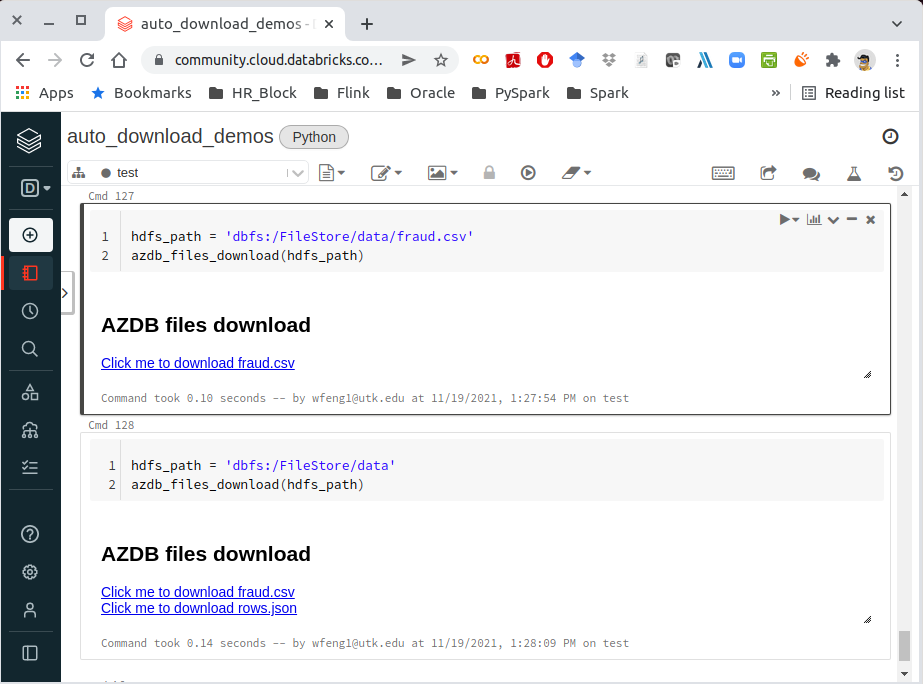

26. Databricks Tips¶
In this chapter, I will share some of the useful tips when using Databricks.
26.1. Display samples¶
In pyspark, we can use show() to display the given size of the sample.
While in databricks environment, we also have display() function to
display the sample records. In general, the CPU time for big data table/set is
display(df) < df.limit(n).show() < df.show(n)
# n is the number of the given size
26.2. Auto files download¶
Databricks is the most powerful big data analytics and machine learning
platform, while it’s not perfect. The file management system is not that
good like jupyter Notebook/Lab. Here I will provide one way to download
the files under dbfs:/FileStore (This method only works for the files
under dbfs:/FileStore).
In general, the file link for downloading is like:
f"{cluster_address}/files/{file_path}?o={cluster_no}"
Here I provided my auto click download functions:
import os
import IPython
from pyspark.sql import SparkSession
import pyspark.sql.functions as F
from jinja2 import Template
from pathlib import Path
from subprocess import Popen, PIPE
def get_hdfs_files(hdfs_path, relative_path=True):
"""
Get file names and file path or relative path for the given HDFS
path. Note: os.listdir does not work in ``community.cloud.databricks``.
:param hdfs_path: the input HDFS path
:param relative_path: flag of return full path or the path relative to
``dbfs:/FileStore`` (We need the relative for the
file download.)
:return file_names: file names under the given path
:return relative_p: file paths, full path if ``relative_path=False``
else paths relative to ``bdfs:/FileStore``
"""
# get the file information
xx = dbutils.fs.ls(hdfs_path)
# get hdfs path and folder name
file_names = [list(xx[i])[1] for i in range(len(xx))]
hdfs_paths = [list(xx[i])[0] for i in range(len(xx))]
if relative_path:
try:
relative_p = [os.path.relpath(hdfs_path, 'dbfs:/FileStore') for hdfs_path in hdfs_paths]
except:
print("Only suooprt the files under 'dbfs:/FileStore/'")
else:
relative_p = hdfs_paths
return file_names, relative_p
def azdb_files_download(files_path, cluster_address="https://community.cloud.databricks.com",
cluster_no='4622560542654492'):
"""
List the files download links.
:param files_path: the given file path ot folder path
:param cluster_address: Your databricks cluster address, i.e. the link before ``/?o``
:param cluster_no: YOur databricks cluster number, i.e. the number after ``?o=``
"""
if not os.path.isfile(files_path): # os.path.isdir(files_path):
file_names, files_path = get_hdfs_files(files_path)
if not isinstance(files_path, list):
files_path = [files_path]
urls = [f"{cluster_address}/files/{file_path}?o={cluster_no}" for file_path in files_path]
temp = """
<h2>AZDB files download</h2>
{% for i in range(len(urls)) %}
<a href="{{urls[i]}}" target='_blank'> Click me to download {{files_path[i].split('/')[-1]}}</a> <br>
{% endfor %}
"""
html = Template(temp).render(files_path=files_path, urls=urls, len=len)
# get dbutils module
dbutils = IPython.get_ipython().user_ns["dbutils"]
dbutils.displayHTML(html)
Note
In commercial version of databricks, you can use
spark.conf.get("spark.databricks.clusterUsageTags.instanceWorkerEnvId")
to get the cluster_no. But it will not work for community version.
By using the above code, you can download the files relative to dbfs:/FileStore.
The files under dbfs:/FileStore/data
File under
dbfs:/FileStore/data¶
Click download demos:
File download in databricks¶
26.3. Working with AWS S3¶
Many companies chose to save sensitive data in AWS S3. So you may have to deal
with data with python in Databricks, while python will have many issues to
operate in Databricks(PySpark will not have problems if the environment was
set up correctly in Databricks): such as the os.system command-like
function can not use any more; no unified way to upload or download different
type files, etc. Here, I will provide my way to work in AWS S3 with python in
Databricks:
26.3.1. Credentials¶
I use Security Token Service (STS) to create the credentials to access AWS S3. STS enables you to request temporary, limited-privilege credentials for Identity and Access Management (IAM) users or for users that you authenticate (federated users). More details can be found at: https://boto3.amazonaws.com/v1/documentation/api/latest/reference/services/sts.html
import boto3
response = boto3.client('sts')\
.assume_role(RoleArn='arn:aws:iam::123456789012:role/demo',
RoleSessionName='your_role_session_name')
credentials = response['Credentials']
26.3.2. File Upload to S3¶
The main idea at here is to save the file in memory or a temporary file, then
use put_object to put the file in S3. It’s a little bit tricky to save the
corresponding formatted file in memory, I will list several common types in the
examples.
s3_file_uploadFunction
def s3_file_upload(data, path):
file_type = path.split('/')[-1].split('.')[-1].lower()
try:
content_type = s3_content_type(file_type)
except:
print('Do not support the current input type!!!')
s3_path = path.replace('s3://', '').replace('s3a://', '')
bucket = s3_path.split('/')[0]
key = s3_path.split('/', 1)[1]
try:
s3_resource.Bucket(bucket)\
.put_object(Key=key,
Body=data,
ContentType=content_type,
ACL='public-read')
print(f"{key.split('/')[-1]} has been successfully saved in s3!")
except Exception as err:
print(err)
s3_content_typeFunction
def s3_content_type(file_type):
mapping = {png:image/png}
return mapping[file_type]
The full mapping list can be found as follows:
3dm:x-world/x-3dmf
3dmf:x-world/x-3dmf
a:application/octet-stream
aab:application/x-authorware-bin
aam:application/x-authorware-map
aas:application/x-authorware-seg
abc:text/vnd.abc
acgi:text/html
afl:video/animaflex
ai:application/postscript
aif:audio/aiff
#aif:audio/x-aiff
aifc:audio/aiff
#aifc:audio/x-aiff
aiff:audio/aiff
#aiff:audio/x-aiff
aim:application/x-aim
aip:text/x-audiosoft-intra
ani:application/x-navi-animation
aos:application/x-nokia-9000-communicator-add-on-software
aps:application/mime
arc:application/octet-stream
arj:application/arj
art:image/x-jg
asf:video/x-ms-asf
asm:text/x-asm
asp:text/asp
asx:application/x-mplayer2
#asx:video/x-ms-asf
#asx:video/x-ms-asf-plugin
au:audio/basic
#au:audio/x-au
#avi:video/avi
#avi:video/msvideo
avi:video/x-msvideo
avs:video/avs-video
bcpio:application/x-bcpio
#bin:application/mac-binary
#bin:application/macbinary
#bin:application/octet-stream
bin:application/x-binary
#bin:application/x-macbinary
bm:image/bmp
bmp:image/bmp
boo:application/book
book:application/book
boz:application/x-bzip2
bsh:application/x-bsh
bz:application/x-bzip
bz2:application/x-bzip2
c:text/plain
c++:text/plain
cat:application/vnd.ms-pki.seccat
cc:text/plain
ccad:application/clariscad
cco:application/x-cocoa
cdf:application/cdf
cer:application/pkix-cert
cha:application/x-chat
chat:application/x-chat
class:application/java
com:application/octet-stream
conf:text/plain
cpio:application/x-cpio
cpp:text/x-c
cpt:application/mac-compactpro
crl:application/pkcs-crl
crt:application/pkix-cert
csh:application/x-csh
css:text/css
cxx:text/plain
dcr:application/x-director
deepv:application/x-deepv
def:text/plain
der:application/x-x509-ca-cert
dif:video/x-dv
dir:application/x-director
dl:video/dl
doc:application/msword
dot:application/msword
dp:application/commonground
drw:application/drafting
dump:application/octet-stream
dv:video/x-dv
dvi:application/x-dvi
dwf:model/vnd.dwf
dwg:application/acad
dxf:application/dxf
dxr:application/x-director
el:text/x-script.elisp
elc:application/x-bytecode.elisp
env:application/x-envoy
eps:application/postscript
es:application/x-esrehber
etx:text/x-setext
evy:application/envoy
exe:application/octet-stream
f:text/plain
f77:text/x-fortran
f90:text/plain
fdf:application/vnd.fdf
fif:application/fractals
fli:video/fli
flo:image/florian
flx:text/vnd.fmi.flexstor
fmf:video/x-atomic3d-feature
for:text/plain
fpx:image/vnd.fpx
frl:application/freeloader
funk:audio/make
g:text/plain
g3:image/g3fax
gif:image/gif
gl:video/gl
gsd:audio/x-gsm
gsm:audio/x-gsm
gsp:application/x-gsp
gss:application/x-gss
gtar:application/x-gtar
gz:application/x-gzip
gzip:application/x-gzip
h:text/plain
hdf:application/x-hdf
help:application/x-helpfile
hgl:application/vnd.hp-hpgl
hh:text/plain
hlp:application/hlp
hpg:application/vnd.hp-hpgl
hpgl:application/vnd.hp-hpgl
hqx:application/binhex
hta:application/hta
htc:text/x-component
htm:text/html
html:text/html
htmls:text/html
htt:text/webviewhtml
htx:text/html
ice:x-conference/x-cooltalk
ico:image/x-icon
idc:text/plain
ief:image/ief
iefs:image/ief
iges:application/iges
igs:application/iges
ima:application/x-ima
imap:application/x-httpd-imap
inf:application/inf
ins:application/x-internett-signup
ip:application/x-ip2
isu:video/x-isvideo
it:audio/it
iv:application/x-inventor
ivr:i-world/i-vrml
ivy:application/x-livescreen
jam:audio/x-jam
java:text/plain
jcm:application/x-java-commerce
jfif:image/jpeg
jpeg:image/jpeg
jpg:image/jpeg
jps:image/x-jps
js:application/x-javascript
jut:image/jutvision
kar:audio/midi
ksh:text/x-script.ksh
la:audio/nspaudio
lam:audio/x-liveaudio
latex:application/x-latex
lha:application/octet-stream
lhx:application/octet-stream
list:text/plain
lma:audio/nspaudio
log:text/plain
lst:text/plain
lsx:text/x-la-asf
ltx:application/x-latex
lzh:application/octet-stream
lzx:application/octet-stream
m:text/plain
m1v:video/mpeg
m2a:audio/mpeg
m2v:video/mpeg
m3u:audio/x-mpequrl
m4v:video/x-m4v
man:application/x-troff-man
mht:message/rfc822
mhtml:message/rfc822
midi:audio/midi
mif:application/x-frame
mjf:audio/x-vnd.audioexplosion.mjuicemediafile
mjpg:video/x-motion-jpeg
mod:audio/mod
mov:video/quicktime
movie:video/x-sgi-movie
mp2:audio/mpeg
mp3:audio/mpeg
#mpa:audio/mpeg
mpa:video/mpeg
mpc:application/x-project
mpeg:video/mpeg
mpg:video/mpeg
mpga:audio/mpeg
ogg:video/ogg
ogv:video/ogg
p:text/x-pascal
p10:application/pkcs10
#p12:application/pkcs-12
p12:application/x-pkcs12
p7a:application/x-pkcs7-signature
p7c:application/x-pkcs7-mime
p7m:application/pkcs7-mime
p7r:application/x-pkcs7-certreqresp
p7s:application/pkcs7-signature
part:application/pro_eng
pas:text/pascal
pbm:image/x-portable-bitmap
pcl:application/x-pcl
pct:image/x-pict
pcx:image/x-pcx
pdb:chemical/x-pdb
pdf:application/pdf
pfunk:audio/make
pgm:image/x-portable-graymap
pic:image/pict
pict:image/pict
pkg:application/x-newton-compatible-pkg
pko:application/vnd.ms-pki.pko
pl:text/plain
plx:application/x-pixclscript
pm:image/x-xpixmap
pm4:application/x-pagemaker
pm5:application/x-pagemaker
png:image/png
pnm:image/x-portable-anymap
pot:application/mspowerpoint
ppa:application/vnd.ms-powerpoint
ppm:image/x-portable-pixmap
pps:application/mspowerpoint
ppt:application/mspowerpoint
#ppt:application/powerpoint
#ppt:application/vnd.ms-powerpoint
#ppt:application/x-mspowerpoint
ppz:application/mspowerpoint
pre:application/x-freelance
prt:application/pro_eng
ps:application/postscript
psd:application/octet-stream
pvu:paleovu/x-pv
pwz:application/vnd.ms-powerpoint
py:text/x-script.phyton
pyc:applicaiton/x-bytecode.python
qcp:audio/vnd.qcelp
qd3:x-world/x-3dmf
#qd3d:x-world/x-3dmf
qif:image/x-quicktime
qt:video/quicktime
qtc:video/x-qtc
qti:image/x-quicktime
qtif:image/x-quicktime
ra:audio/x-pn-realaudio
#ra:audio/x-pn-realaudio-plugin
#ra:audio/x-realaudio
ram:audio/x-pn-realaudio
ras:application/x-cmu-raster
#ras:image/cmu-raster
#ras:image/x-cmu-raster
#rast:image/cmu-raster
#rexx:text/x-script.rexx
#rf:image/vnd.rn-realflash
rgb:image/x-rgb
rm:application/vnd.rn-realmedia
#rm:audio/x-pn-realaudio
rmi:audio/mid
rmm:audio/x-pn-realaudio
rmp:audio/x-pn-realaudio
#rmp:audio/x-pn-realaudio-plugin
rng:application/ringing-tones
#rng:application/vnd.nokia.ringing-tone
rnx:application/vnd.rn-realplayer
roff:application/x-troff
rp:image/vnd.rn-realpix
rpm:audio/x-pn-realaudio-plugin
rt:text/richtext
#rt:text/vnd.rn-realtext
rtf:application/rtf
#rtf:application/x-rtf
#rtf:text/richtext
#rtx:application/rtf
#rtx:text/richtext
rv:video/vnd.rn-realvideo
s:text/x-asm
s3m:audio/s3m
#saveme:application/octet-stream
sbk:application/x-tbook
scm:application/x-lotusscreencam
#scm:text/x-script.guile
#scm:text/x-script.scheme
#scm:video/x-scm
sdml:text/plain
sdp:application/sdp
#sdp:application/x-sdp
sdr:application/sounder
sea:application/sea
#sea:application/x-sea
set:application/set
sgm:text/sgml
#sgm:text/x-sgml
sgml:text/sgml
#sgml:text/x-sgml
sh:application/x-bsh
#sh:application/x-sh
#sh:application/x-shar
#sh:text/x-script.sh
shar:application/x-bsh
#shar:application/x-shar
shtml:text/html
#shtml:text/x-server-parsed-html
sid:audio/x-psid
#sit:application/x-sit
sit:application/x-stuffit
skd:application/x-koan
skm:application/x-koan
skp:application/x-koan
skt:application/x-koan
sl:application/x-seelogo
smi:application/smil
smil:application/smil
#snd:audio/basic
snd:audio/x-adpcm
sol:application/solids
#spc:application/x-pkcs7-certificates
spc:text/x-speech
spl:application/futuresplash
spr:application/x-sprite
sprite:application/x-sprite
src:application/x-wais-source
ssi:text/x-server-parsed-html
ssm:application/streamingmedia
sst:application/vnd.ms-pki.certstore
step:application/step
stl:application/sla
#stl:application/vnd.ms-pki.stl
#stl:application/x-navistyle
stp:application/step
sv4cpio:application/x-sv4cpio
sv4crc:application/x-sv4crc
svf:image/vnd.dwg
#svf:image/x-dwg
svr:application/x-world
#svr:x-world/x-svr
swf:application/x-shockwave-flash
t:application/x-troff
talk:text/x-speech
tar:application/x-tar
tbk:application/toolbook
#tbk:application/x-tbook
tcl:application/x-tcl
#tcl:text/x-script.tcl
tcsh:text/x-script.tcsh
tex:application/x-tex
texi:application/x-texinfo
texinfo:application/x-texinfo
#text:application/plain
text:text/plain
#tgz:application/gnutar
tgz:application/x-compressed
tif:image/tiff
#tif:image/x-tiff
tiff:image/tiff
#tiff:image/x-tiff
tr:application/x-troff
tsi:audio/tsp-audio
tsp:application/dsptype
#tsp:audio/tsplayer
tsv:text/tab-separated-values
turbot:image/florian
txt:text/plain
uil:text/x-uil
uni:text/uri-list
unis:text/uri-list
unv:application/i-deas
uri:text/uri-list
uris:text/uri-list
ustar:application/x-ustar
#ustar:multipart/x-ustar
uu:application/octet-stream
#uu:text/x-uuencode
uue:text/x-uuencode
vcd:application/x-cdlink
vcs:text/x-vcalendar
vda:application/vda
vdo:video/vdo
vew:application/groupwise
viv:video/vivo
#viv:video/vnd.vivo
vivo:video/vivo
#vivo:video/vnd.vivo
vmd:application/vocaltec-media-desc
vmf:application/vocaltec-media-file
voc:audio/voc
#voc:audio/x-voc
vos:video/vosaic
vox:audio/voxware
vqe:audio/x-twinvq-plugin
vqf:audio/x-twinvq
vql:audio/x-twinvq-plugin
vrml:application/x-vrml
#vrml:model/vrml
#vrml:x-world/x-vrml
vrt:x-world/x-vrt
vsd:application/x-visio
vst:application/x-visio
vsw:application/x-visio
w60:application/wordperfect6.0
w61:application/wordperfect6.1
w6w:application/msword
wav:audio/wav
#wav:audio/x-wav
wb1:application/x-qpro
wbmp:image/vnd.wap.wbmp
web:application/vnd.xara
wiz:application/msword
wk1:application/x-123
wmf:windows/metafile
wml:text/vnd.wap.wml
wmlc:application/vnd.wap.wmlc
wmls:text/vnd.wap.wmlscript
wmlsc:application/vnd.wap.wmlscriptc
word:application/msword
wp:application/wordperfect
wp5:application/wordperfect
#wp5:application/wordperfect6.0
wp6:application/wordperfect
wpd:application/wordperfect
#wpd:application/x-wpwin
wq1:application/x-lotus
wri:application/mswrite
#wri:application/x-wri
#wrl:application/x-world
wrl:model/vrml
#wrl:x-world/x-vrml
#wrz:model/vrml
#wrz:x-world/x-vrml
#wsc:text/scriplet
wsrc:application/x-wais-source
wtk:application/x-wintalk
#xbm:image/x-xbitmap
#xbm:image/x-xbm
xbm:image/xbm
xdr:video/x-amt-demorun
xgz:xgl/drawing
xif:image/vnd.xiff
xl:application/excel
xla:application/excel
#xla:application/x-excel
#xla:application/x-msexcel
#xlb:application/excel
#xlb:application/vnd.ms-excel
xlb:application/x-excel
#xlc:application/excel
#xlc:application/vnd.ms-excel
#xlc:application/x-excel
xld:application/excel
#xld:application/x-excel
#xlk:application/excel
xlk:application/x-excel
#xll:application/excel
#xll:application/vnd.ms-excel
xll:application/x-excel
#xlm:application/excel
#xlm:application/vnd.ms-excel
xlm:application/x-excel
#xls:application/excel
#xls:application/vnd.ms-excel
#xls:application/x-excel
xls:application/x-msexcel
#xlt:application/excel
xlt:application/x-excel
#xlv:application/excel
xlv:application/x-excel
#xlw:application/excel
#xlw:application/vnd.ms-excel
#xlw:application/x-excel
xlw:application/x-msexcel
xm:audio/xm
#xml:application/xml
xml:text/xml
xmz:xgl/movie
xpix:application/x-vnd.ls-xpix
#xpm:image/x-xpixmap
xpm:image/xpm
x-png:image/png
xsr:video/x-amt-showrun
#xwd:image/x-xwd
xwd:image/x-xwindowdump
xyz:chemical/x-pdb
#z:application/x-compress
z:application/x-compressed
#zip:application/x-compressed
#zip:application/x-zip-compressed
zip:application/zip
#zip:multipart/x-zip
zoo:application/octet-stream
zsh:text/x-script.zsh
Examples
.csvfile
save csv file in memory:
csv_io = io.StringIO()
df.to_csv(csv_io, sep='\t', header=True, index=False)
csv_io.seek(0)
# the csv data need encode
csv_data = io.BytesIO(csv_io.getvalue().encode())
Note
The alternative way by using
tempfile:
with tempfile.TemporaryFile(mode='r+') as fp:
df.to_csv(fp, sep='\t', header=True, index=False)
fp.seek(0)
#
s3_file_upload(csv_data, file_path)
Upload file
>>> file_path = 'my_bucket/~~/~~/test/test.csv'
>>> s3_file_upload(csv_data, file_path)
test.csv has been successfully saved in S3!
.jsonfile
>>> json_object = """ your json content"""
>>> json_data = json.dumps(json_object)
>>> file_path = 'my_bucket/~~/~~/test/test.json'
>>> s3_file_upload(json_data, file_path)
test.json has been successfully saved in S3!
Note
The alternative way by using
tempfile:
with tempfile.TemporaryFile() as fp:
joblib.dump(json_data, fp)
fp.seek(0)
#
s3_file_upload(json_data, file_path)
.png,.jpegor.pdf
Save the image in memory:
flights = sns.load_dataset("flights")
may_flights = flights.query("month == 'May'")
fig = plt.figure(figsize=(20,8))
sns.lineplot(data=may_flights, x="year", y="passengers")
img_data = io.BytesIO()
plt.savefig(img_data, format='png')
img_data.seek(0)
Save the in-memory image data in S3:
path = 'my_bucket/my_key'
s3_file_save(img_data, path)
Note
The above method also works for .jpeg and .pdf format.
26.3.3. File Download from S3¶
The main idea is using the s3 resource function to download the file and save
it at /temp as a temporary file, the use the corresponding formatted
functions to read it.
s3_file_downloadFunction
def s3_file_download(path):
# extract bucket and key from the given path
s3_path = path.replace('s3://', '').replace('s3a://', '')
bucket = s3_path.split('/')[0]
key = s3_path.split('/', 1)[1]
# download file and save it as a temp file
file_name = os.path.join('/tmp', path.split('/')[-1])
s3_resource.Bucket(bucket).download_file(key, file_name)
# return saved file path
return file_name
Examples
>>> file_path = 'my_bucket/***/***/test/test.json'
>>> file_name = s3_file_download(file_path)
'/temp/test.json'
>>> joblib.load(filename)
26.3.4. File Management in S3¶
I mainly use my s3_fs to help me do the file management in S3.
s3_fsFunction
The s3_fs is mainly based on s3fs package. The top-level class
s3fs holds connection information and allows typical file-system style
operations like cp, mv, ls, walk, du, glob, etc.
More details can be found at:
https://s3fs.readthedocs.io/en/latest/index.html
import s3fs
s3_fs = s3fs.S3FileSystem(anon=False,
key=credentials['AccessKeyId'],
secret=credentials['SecretAccessKey'],
token=credentials['SessionToken'])
Examples
Simple locate and read a file:
>>> s3_fs.ls('my-bucket')
['demo-file.csv']
>>> with fs.open('my-bucket/demo-file.csv', 'rb') as f:
... print(f.read())
b'UserId\tdate\nuser_id1\t2019-05-02\nuser_id2\t2019-12-02\n'
26.4. delta format¶
TODO…
26.5. mlflow¶
TODO…